11. Sensor Integration and Application Development Courses
11.1 Face-Activated Fan
11.1.1 Assembly

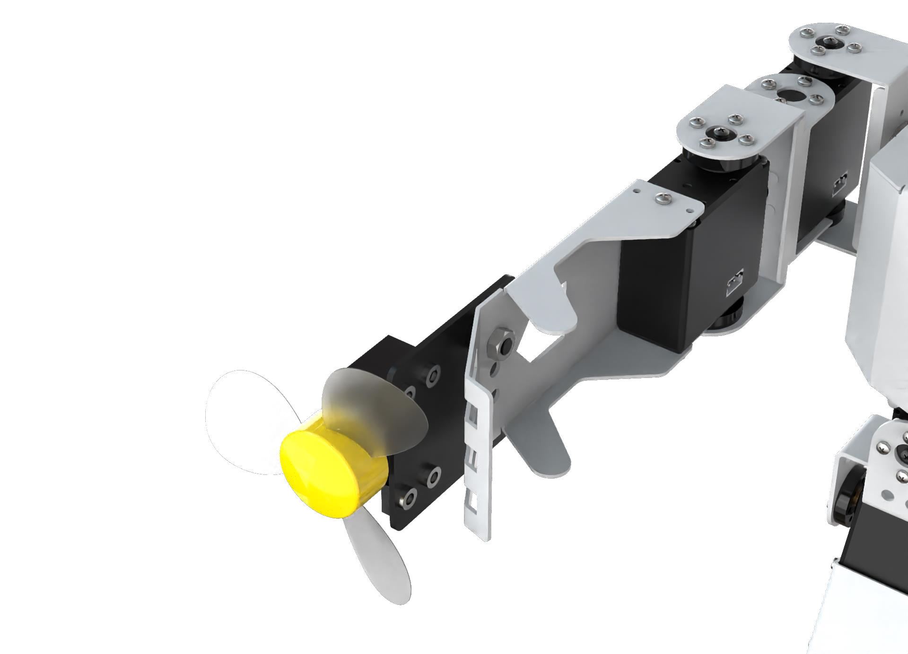
11.1.2 Face-Activated Fan
Getting Ready
Prepare a fan module and install it on the expansion hole of the robot’s right arm. The specific installation method can refer to the section “11.1.1 Assembly”.
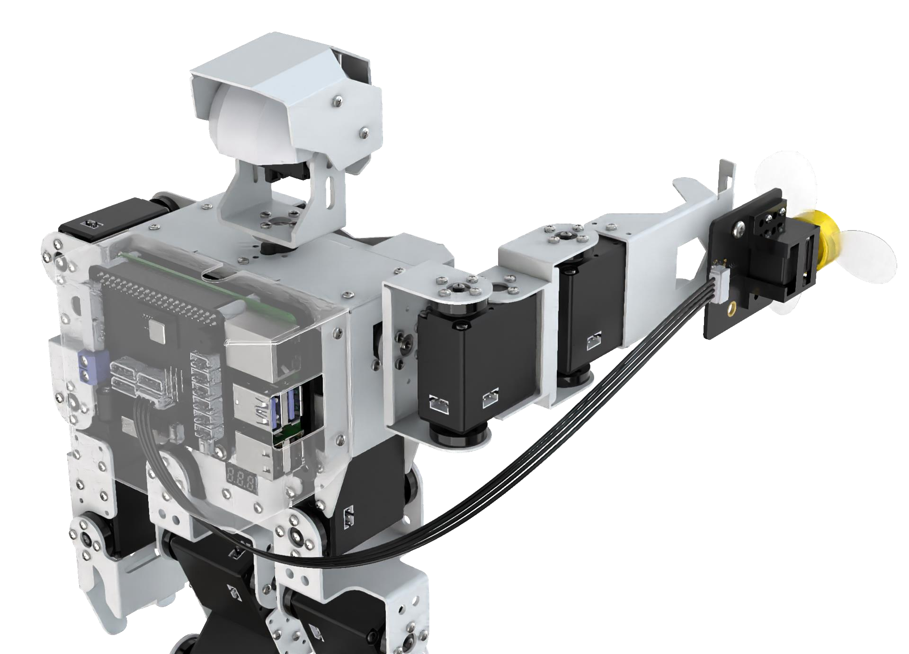
Working Principle
Let’s look at the working principle of this lesson:
Firstly, scale the screen to detect the human face. Then convert the recognized face coordinates into the coordinates before scaling, and then judge whether it is the biggest face, and frame the recognized face.
When the camera detects a face, raise the arm, align the fan with the face, and activate the fan module. If the camera cannot detect a face, deactivate the fan module, and rotate the camera’s pan-tilt servo left and right to locate a face.
Operation Steps
Note
The entered command must pay attention to case sensitivity and space.
(1) Turn on the robot and connect to Raspberry Pi desktop with VNC.
(2) Click the icon on the upper left corner of the desktop to open the command line terminal.
(3) Enter the following command and press “Enter” to come to the directory of the game programmings.
cd /home/pi/TonyPi/Extend/sensor_course/sensor_development/
(4) Enter the command below, and then press “Enter” to start the game.
python3 face_track_and_fan.py
(5) If want to exit the game, press “Ctrl+C” in the LX terminal. Please try multiple times if fail to exit.
Project Outcome
After the program is started, TonyPi Pro raises left arm and detects face. When the human face is detected, the fan revolves, vice verse.
Program Analysis
The source code of this program is saved in: /home/pi/TonyPi/Extend/sensor_course/sensor_development/face_track_and_fan.py
Module Parameter Import
| Imported Module | Function |
|---|---|
import sys |
Imports Python's built-in sys module to access system-specific parameters and functions. |
import cv2 |
Imports the OpenCV library for image processing and computer vision tasks. |
import time |
Imports the time module for handling time-related operations such as delays. |
import math |
Provides access to fundamental mathematical functions and constants. |
import threading |
Enables multithreaded execution within the program. |
import np |
Imports NumPy, a powerful library for numerical operations, especially arrays and matrices. |
from hiwonder.PID import PID |
Imports the PID control module for implementing proportional–integral–derivative control. |
from hiwonder import Misc as Misc |
Imports the Misc module, used for handling recognized rectangle data. |
from hiwonder import Board as Board |
Imports the Board module for controlling hardware like servos and buzzers. |
import hiwonder.camera as camera |
Imports the camera module to interface with video input devices. |
import hiwonder.ActionGroupControl as AGC |
Imports the action group module for executing pre-defined robot movements. |
import hiwonder.yaml_handle |
Provides tools for reading and handling YAML configuration files. |
Functional Logic
The system starts by capturing image data using a camera. To prepare the image for facial detection, it first converts the color space, making it easier to identify facial features.
It then uses MediaPipe’s face detection model to analyze the image and detect any faces present. Once a face is recognized, the system triggers predefined action groups to respond accordingly.
Program Logic and Code Analysis
(1) Initialization
① Importing Libraries
The first step in initialization is importing the necessary libraries to enable various functions throughout the program. For details on the imported modules, please refer to section 5.1.
4 5 6 7 8 9 10 11 12 13 14 15 16 17 | import sys import cv2 import math import time import threading import numpy as np import mediapipe as mp import gpiod import hiwonder.ros_robot_controller_sdk as rrc from hiwonder.Controller import Controller import hiwonder.Misc as Misc import hiwonder.Camera as Camera import hiwonder.ActionGroupControl as AGC import hiwonder.yaml_handle as yaml_handle |
② Setting Initial States
This step involves configuring the system’s default settings, including the initial position of the servos, the face detection module, and the minimum confidence level required for facial recognition.
25 26 | face = mp.solutions.face_detection face_detection = face.FaceDetection(min_detection_confidence=0.5) |
30 31 32 33 34 35 36 37 38 39 40 41 42 43 | servo_data = None def load_config(): global servo_data servo_data = yaml_handle.get_yaml_data(yaml_handle.servo_file_path) load_config() servo2_pulse = servo_data['servo2'] board = rrc.Board() ctl = Controller(board) def initMove(): ctl.set_pwm_servo_pulse(1, 1600, 500) ctl.set_pwm_servo_pulse(2, servo2_pulse, 500) |
(2) Image Processing
① Color Space Conversion
The BGR image is converted to RGB format to prepare it for face detection.
135 136 | image_rgb = cv2.cvtColor(img_copy, cv2.COLOR_BGR2RGB) results = face_detection.process(image_rgb) |
② Face Detection Using MediaPipe
The system uses MediaPipe’s face detection model to identify faces within the frame. Once a face is detected, a bounding box is drawn around it. If the center of the detected face is aligned with the center of the image, the variable start_greet is set to True, which triggers the execution of a predefined action group.
137 138 139 140 141 142 143 144 145 146 147 148 149 150 | if results.detections: for index, detection in enumerate(results.detections): bboxC = detection.location_data.relative_bounding_box bbox = (int(bboxC.xmin * img_w), int(bboxC.ymin * img_h), int(bboxC.width * img_w), int(bboxC.height * img_h)) cv2.rectangle(img, bbox, (0,255,0), 2) x, y, w, h = bbox center_x = int(x + (w/2)) if abs(center_x - img_w/2) < img_w/4: start_greet = True else: set_fan(0) start_greet = False |
(3) Face Recognition
If no face is detected, the pan-tilt servos will rotate left and right in search of a face.
Once a face is recognized, the Board.setBusServoPulse function is called to raise the robotic arm and activate the fan.
86 87 88 89 90 91 92 93 94 95 96 97 98 99 100 101 102 103 104 105 106 107 108 109 110 111 112 113 114 115 | def move(): global start_greet, start_ global d_pulse, servo2_pulse while True: if robot_is_running: if start_greet: start_greet = False pulse = int(Misc.map(servo2_pulse, 1000, 2000, 600, 200)) ctl.set_bus_servo_pulse(16,700,1500) time.sleep(1.5) if pulse < 500: ctl.set_bus_servo_pulse(15,200,600) ctl.set_bus_servo_pulse(14,pulse,600) time.sleep(0.6) else: ctl.set_bus_servo_pulse(15,pulse-300,600) ctl.set_bus_servo_pulse(14,445,500) time.sleep(0.6) set_fan(1) else: set_fan(0) if servo2_pulse > 2000 or servo2_pulse < 1000: d_pulse = -d_pulse servo2_pulse += d_pulse ctl.set_pwm_servo_pulse(2, servo2_pulse, 60) time.sleep(0.06) else: time.sleep(0.01) |
11.2 Obstacle Avoidance
11.2.1 Assembly
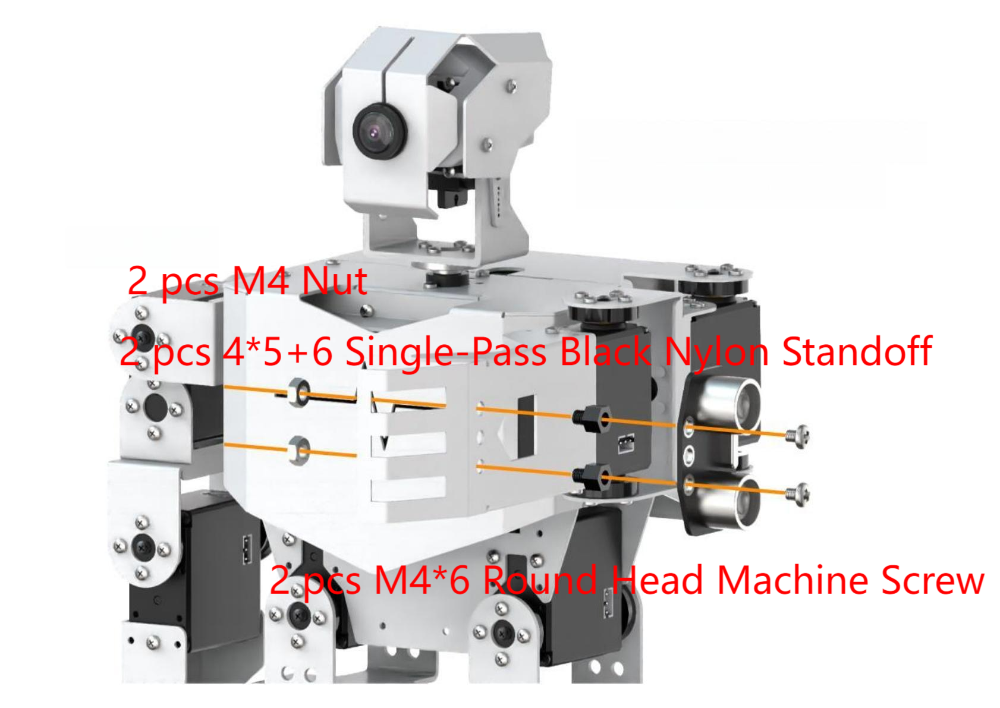
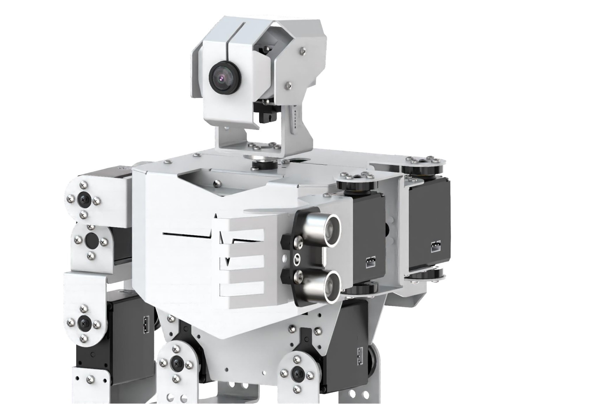
11.2.2 Obstacle Avoidance
Getting Ready
Prepare an ultrasonic sensor and install it on the expansion hole of robot’s left hand. The specific installation method can refer to the file 11.2.1 Assembly under the same directory.
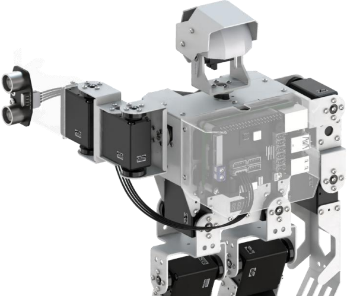
Working Principle
Let’s look at the working principle:
Firstly, the distance to the obstacle ahead is detected by the ultrasonic sensor, and then set the ultrasonic measurement threshold. When the conditions are met, the robot automatically avoids the obstacle, otherwise it moves forward directly.
Operation Steps
Note
The entered command must pay attention to case sensitivity and space.
(1) Turn on the robot and connect to the Raspberry Pi desktop through VNC.
(2) Click on the upper left corner of the desktop to open command line terminal. Then execute the following command to navigate to the directory containing programs.
cd /home/pi/TonyPi/Extend/sensor_course/sensor_development/
(3) Enter the command below, and then press “Enter” to start the game.
python3 sonar_barrier.py
(4) If want to exit the game, press “Ctrl+C” in the LX terminal. Please try multiple times if fail to exit.
Project Outcome
After the program is started, if the distance between the ultrasonic wave and the object ahead is less than or equal to 30cm, it is determined to be an obstacle. TonyPi Pro will raise its left hand to detect whether there is an obstacle ahead. If not, the robot will move forward; If there is an obstacle, the ultrasonic sensor will detect the robot of the left and right sides to control the movement of the robot.
Function Extension
The default distance of obstacle avoidance is 300mm. If want to modify the distance value (this section takes setting the distance as 100mm as example), please refer to the following steps:
(1) Enter the following command and press “Enter” to come to the directory of the game programs.
cd /home/pi/TonyPi/Extend/sensor_course/sensor_development/
(2) Enter the following command, then press “Enter” to open the game programming file.
vim sonar_barrier.py
(3) Find the code in the program interface as the figure shown below.
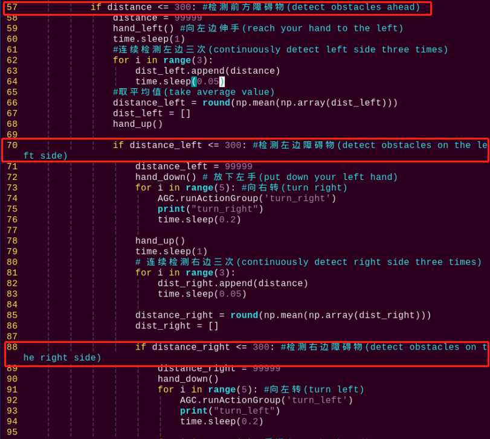
(4) Press “i” on keyboard. When “Insert” appears in the lower left corner, which means it has entered the editing mode.

(5) Modify “300” in “if distance <= 300” to “100”, as the figure shown below:
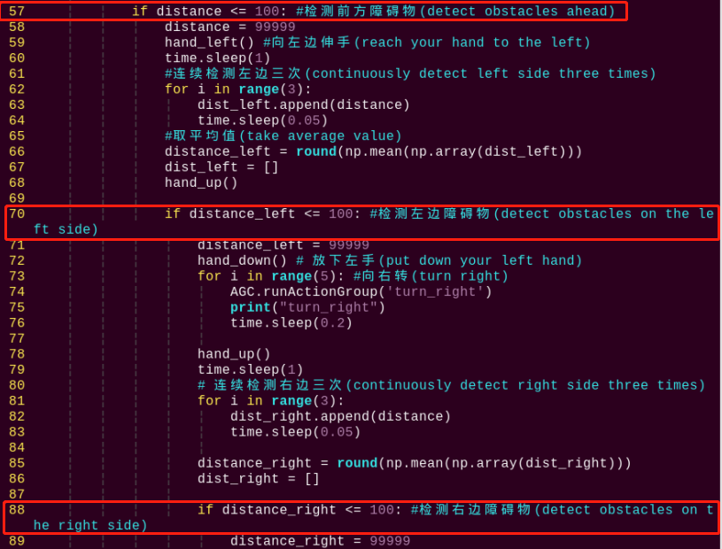
(6) After modification, press “Esc” and then enter “:wq” (Please note that the colon is in front of wq). Then press “Enter” to save and exit the modified content.
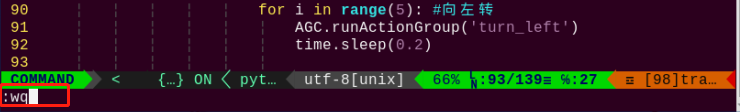
Program Analysis
The source code is saved in: home/pi/TonyPi/Extend/sensor_course/sensor_development/sonar_barrier.py
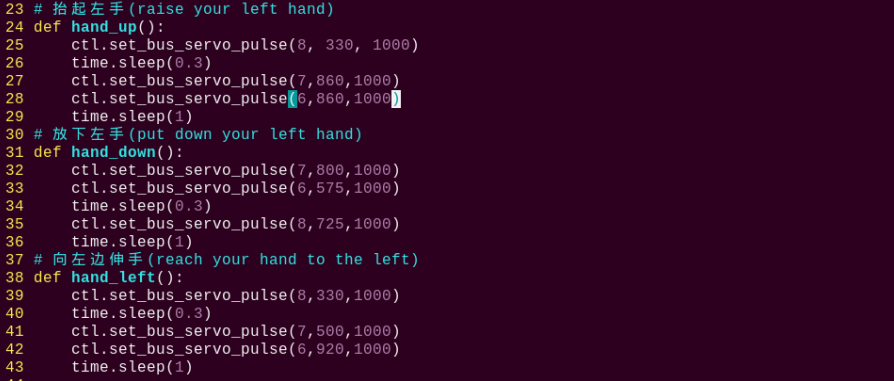
Module Parameter Import
| Imported Module | Function |
|---|---|
import sys |
Imports Python's built-in sys module to access system-specific parameters and functions. |
import cv2 |
Imports the OpenCV library for image processing and computer vision tasks. |
import time |
Imports the time module for handling time-related operations such as delays. |
import math |
Provides access to fundamental mathematical functions and constants. |
import threading |
Enables multithreaded execution within the program. |
import np |
Imports NumPy, a powerful library for numerical operations, especially arrays and matrices. |
from hiwonder.PID import PID |
Imports the PID control module for implementing proportional–integral–derivative control. |
from hiwonder import Misc as Misc |
Imports the Misc module, used for handling recognized rectangle data. |
from hiwonder import Board as Board |
Imports the Board module for controlling hardware like servos and buzzers. |
import hiwonder.camera as camera |
Imports the camera module to interface with video input devices. |
import hiwonder.ActionGroupControl as AGC |
Imports the action group module for executing pre-defined robot movements. |
import hiwonder.yaml_handle |
Provides tools for reading and handling YAML configuration files. |
Functional Logic
The robot uses data from the ultrasonic sensor to detect obstacles and performs corresponding avoidance maneuvers based on the measured distance.
Program Logic and Code Analysis
(1) Initialization
① Import Required Libraries
At the beginning of the program, all necessary libraries are imported to enable various functionalities. For a detailed list of the imported modules, please refer to Section 6.1.
4 5 6 7 8 9 10 11 12 | import os import sys import time import threading import numpy as np import hiwonder.ros_robot_controller_sdk as rrc from hiwonder.Controller import Controller import hiwonder.Sonar as Sonar import hiwonder.ActionGroupControl as AGC |
② Set Initial State
The robot’s initial posture is configured, including basic predefined movements to prepare for obstacle avoidance behavior.
20 21 22 23 24 25 26 27 28 29 30 31 32 33 34 35 36 37 38 39 40 | board = rrc.Board() ctl = Controller(board) def hand_up(): ctl.set_bus_servo_pulse(8, 330, 1000) time.sleep(0.3) ctl.set_bus_servo_pulse(7,860,1000) ctl.set_bus_servo_pulse(6,860,1000) time.sleep(1) def hand_down(): ctl.set_bus_servo_pulse(7,800,1000) ctl.set_bus_servo_pulse(6,575,1000) time.sleep(0.3) ctl.set_bus_servo_pulse(8,725,1000) time.sleep(1) def hand_left(): ctl.set_bus_servo_pulse(8,330,1000) time.sleep(0.3) ctl.set_bus_servo_pulse(7,500,1000) ctl.set_bus_servo_pulse(6,920,1000) time.sleep(1) |
Some basic actions have been set for the robot.
127 128 129 | AGC.runActionGroup('stand_slow') time.sleep(1) hand_up() |
(2) Acquiring Ultrasonic Sensor Data
The program reads distance values from the ultrasonic sensor. To ensure stability and accuracy, it performs six consecutive readings, stores them in a list, and calculates the average value.
131 132 133 134 135 136 137 138 139 | while True: distance_list.append(s.getDistance()) if len(distance_list) >= 6: distance = int(round(np.mean(np.array(distance_list)))) print(distance, 'mm') distance_list = [] time.sleep(0.01) |
(3) Obstacle Avoidance
When an obstacle is detected in front of the robot:
① The robot first turns to the left and extends its arm.
② It then scans the distance on the left side.
If an obstacle is also detected on the left, the robot turns to the right.
If both sides are blocked, the robot moves backward to avoid the obstacle.
③ After avoiding the obstacle, the robot raises its arm and continues moving forward.
55 56 57 58 59 60 61 62 63 64 65 66 67 68 69 70 71 72 73 74 75 76 77 78 79 80 81 82 83 84 85 86 87 88 89 90 91 92 93 94 95 96 97 98 99 100 101 102 103 104 105 106 107 108 109 110 111 | while True: if distance != 99999: if distance <= 300: distance = 99999 hand_left() time.sleep(1) for i in range(3): dist_left.append(distance) time.sleep(0.05) distance_left = round(np.mean(np.array(dist_left))) dist_left = [] hand_up() if distance_left <= 300: distance_left = 99999 hand_down() for i in range(5): AGC.runActionGroup('turn_right') print("turn_right") time.sleep(0.2) hand_up() time.sleep(1) for i in range(3): dist_right.append(distance) time.sleep(0.05) distance_right = round(np.mean(np.array(dist_right))) dist_right = [] if distance_right <= 300: distance_right = 99999 hand_down() for i in range(5): AGC.runActionGroup('turn_left') print("turn_left") time.sleep(0.2) for i in range(5): AGC.runActionGroup('back') print("back") hand_up() else: AGC.runActionGroup('go_hand_up1') print("go") else: hand_down() for i in range(5): AGC.runActionGroup('turn_left') print("turn_left") time.sleep(0.2) hand_up() else: AGC.runActionGroup('go_hand_up1') print("go") else: time.sleep(0.01) |
11.3 Shape Recognition
11.3.1 Assembly
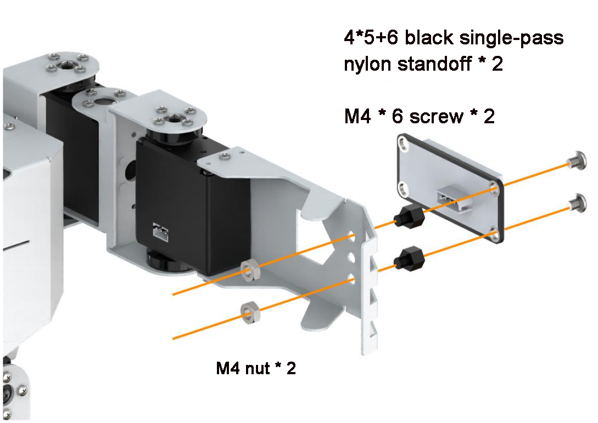
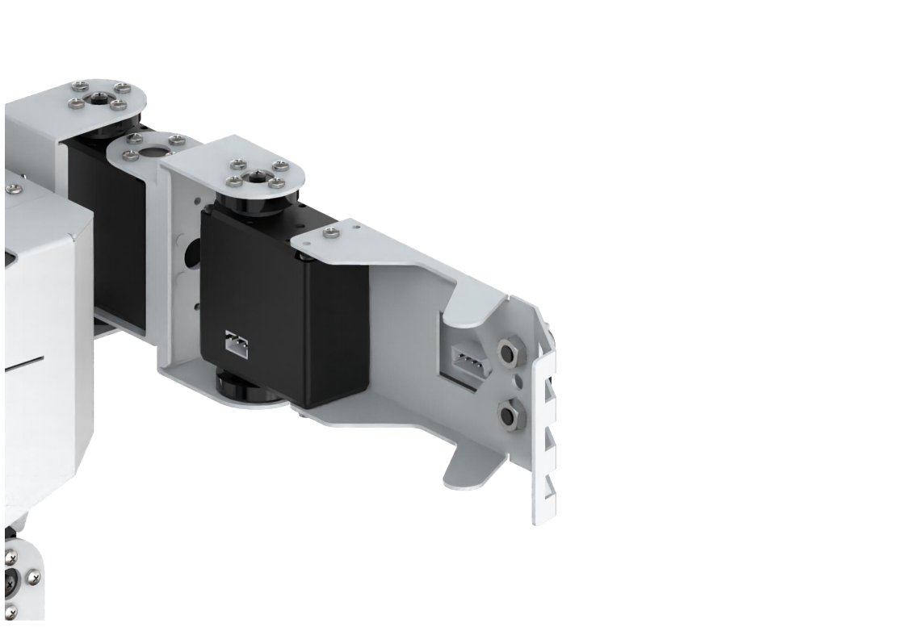
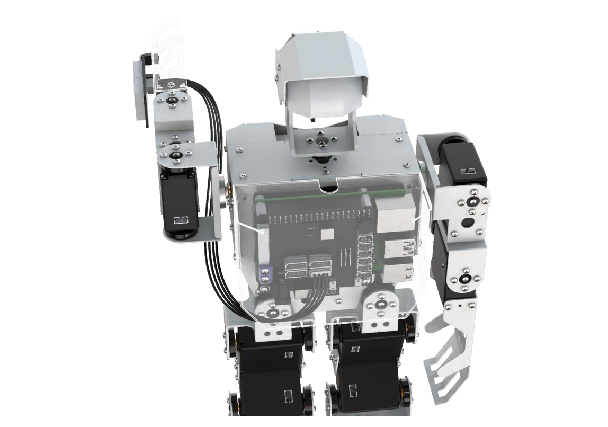
11.3.2 Shape Recognition
Getting Ready
Prepare a dot matrix module and install it on the expansion hole of robot’s left arm. The specific installation method can refer to the file “11.3.1 Assembly” under the same directory.
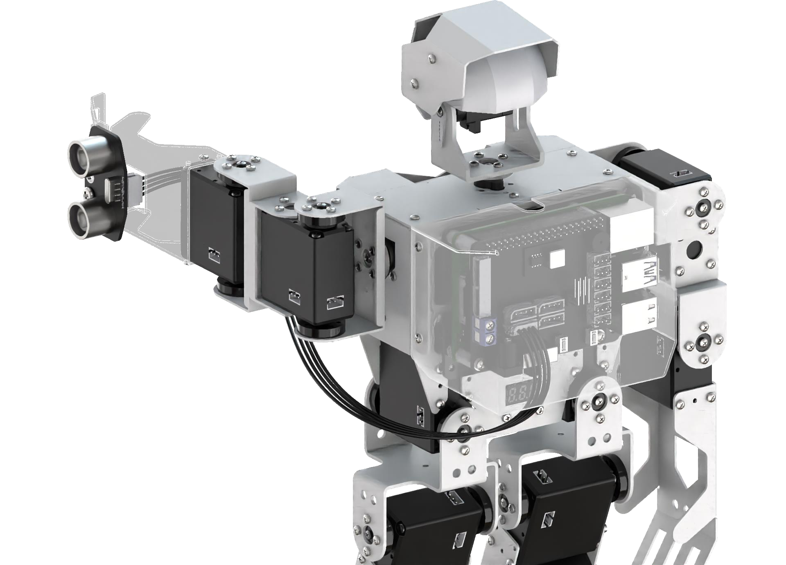
Working Principle
Let’s look at the working principle.
The camera recognizes the object within the visual range. When the shapes of the objects are identified as triangle, rectangles and circles, the dot matrix module will display the graphics shape of the current object, otherwise the dot matrix module does not display.
Operation Steps
Note
The entered command must pay attention to case sensitivity and space.
(1) Turn on the robot and connect to the Raspberry Pi desktop through VNC.
(2) Click the icon on the upper left corner of the desktop to open command line terminal. Enter the following command and press “Enter” to come to the directory of the game programmings.
cd /home/pi/TonyPi/Extend/sensor_course/sensor_development/
(3) Enter the following command, and then press “Enter” to start the game.
python3 shape_recognition.py
(4) If want to exit the game, press “Ctrl+C” in the LX terminal. Please try multiple times if fail to exit.
Project Outcome
After the program is started, the robot’s camera will recognize the object. When the shape of the object is recognized as triangle, rectangle and circle, the dot matrix module will display the corresponding shape. Otherwise, it will not display.
Program Analysis
The source code is saved in: /home/pi/TonyPi/Extend/sensor_course/sensor_development/shape_recognition.py
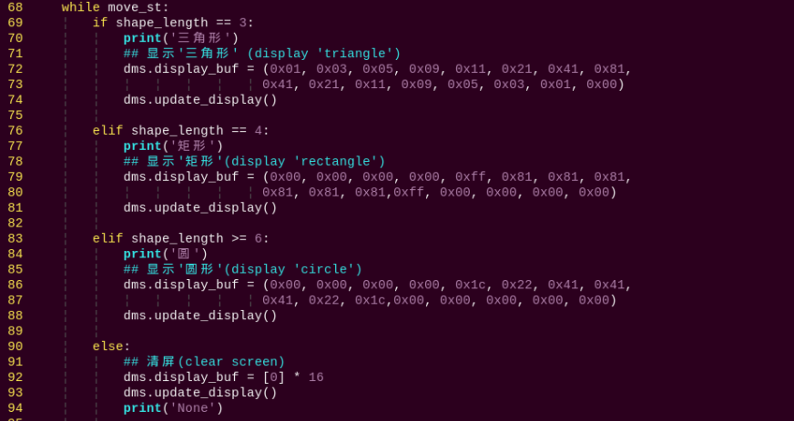
Module Parameter Import
| Imported Module | Function |
|---|---|
import sys |
Imports Python's built-in sys module to access system-specific parameters and functions. |
import cv2 |
Imports the OpenCV library for image processing and computer vision tasks. |
import time |
Imports the time module for handling time-related operations such as delays. |
import math |
Provides access to fundamental mathematical functions and constants. |
import threading |
Enables multithreaded execution within the program. |
import np |
Imports NumPy, a powerful library for numerical operations, especially arrays and matrices. |
from hiwonder.PID import PID |
Imports the PID control module for implementing proportional–integral–derivative control. |
from hiwonder import Misc as Misc |
Imports the Misc module, used for handling recognized rectangle data. |
from hiwonder import Board as Board |
Imports the Board module for controlling hardware like servos and buzzers. |
import hiwonder.camera as camera |
Imports the camera module to interface with video input devices. |
import hiwonder.ActionGroupControl as AGC |
Imports the action group module for executing pre-defined robot movements. |
import hiwonder.yaml_handle |
Provides tools for reading and handling YAML configuration files. |
Program Logic and Code Analysis
The core functionality of this program involves image processing and dot matrix display. The following documentation is structured according to the program’s logical flow diagram.
(1) Initialization
① Importing Functional Libraries
In this step, the necessary libraries are imported to enable subsequent program functionality. For more details on the imported modules, refer to section 6.1.
4 5 6 7 8 9 10 11 12 13 14 15 16 | import sys import cv2 import math import time import signal import threading import numpy as np import hiwonder.ros_robot_controller_sdk as rrc from hiwonder.Controller import Controller from hiwonder import dot_matrix_sensor import hiwonder.Camera as Camera import hiwonder.ActionGroupControl as AGC import hiwonder.yaml_handle as yaml_handle |
② Setting Initial State
The robot’s initial position and basic configuration are established.
32 33 34 35 36 37 38 39 40 41 42 43 | def load_config(): global lab_data, servo_data lab_data = yaml_handle.get_yaml_data(yaml_handle.lab_file_path) servo_data = yaml_handle.get_yaml_data(yaml_handle.servo_file_path) board = rrc.Board() ctl = Controller(board) def inidmsove(): ctl.set_pwm_servo_pulse(1, 1350, 500) ctl.set_pwm_servo_pulse(2, servo_data['servo2'], 500) |
(2) Image Processing
Before converting the captured image to the LAB color space, noise reduction is performed. The image is then smoothed using the GaussianBlur() function. A binary mask is created with the inRange() function. To further minimize noise and enhance contour clarity, morphological operations such as erosion and dilation are applied. Finally, the contour with the largest area is identified.
144 145 146 147 148 149 150 151 152 153 154 155 156 157 158 159 160 161 162 | if action_finish: for i in lab_data: if i != 'white' and i != 'black': frame_mask = cv2.inRange(frame_lab, (lab_data[i]['min'][0], lab_data[i]['min'][1], lab_data[i]['min'][2]), (lab_data[i]['max'][0], lab_data[i]['max'][1], lab_data[i]['max'][2])) opened = cv2.morphologyEx(frame_mask, cv2.MORPH_OPEN, np.ones((6,6),np.uint8)) closed = cv2.morphologyEx(opened, cv2.MORPH_CLOSE, np.ones((6,6),np.uint8)) contours = cv2.findContours(closed, cv2.RETR_EXTERNAL, cv2.CHAIN_APPROX_NONE)[-2] areaMaxContour, area_max = getAreaMaxContour(contours) if areaMaxContour is not None: if area_max > max_area: max_area = area_max color_area_max = i areaMaxContour_max = areaMaxContour |
(3) Shape Recognition
The cv2.approxPolyDP() function is used to approximate contours for shape detection. The number of sides (vertices) of each identified shape is recorded into the shape_list. Once 30 values are collected, the program calculates and prints the average number of sides to determine the dominant shape.
163 164 165 166 167 168 169 170 171 | if max_area > 200: cv2.drawContours(img, areaMaxContour_max, -1, (0, 0, 255), 2) epsilon = 0.035 * cv2.arcLength(areaMaxContour_max, True) approx = cv2.approxPolyDP(areaMaxContour_max, epsilon, True) shape_list.append(len(approx)) if len(shape_list) == 30: shape_length = int(round(np.mean(shape_list))) shape_list = [] print(shape_length) |
(4) Result Display
Based on the previously identified shape (shape_length), a conditional check is performed and the corresponding shape is displayed on the screen.
65 66 67 68 69 70 71 72 73 74 75 76 77 78 79 80 81 82 83 84 85 86 87 88 89 90 | def run(): global shape_length while move_st: if shape_length == 3: print('三角形') dms.display_buf = (0x01, 0x03, 0x05, 0x09, 0x11, 0x21, 0x41, 0x81, 0x41, 0x21, 0x11, 0x09, 0x05, 0x03, 0x01, 0x00) dms.update_display() elif shape_length == 4: print('矩形') dms.display_buf = (0x00, 0x00, 0x00, 0x00, 0xff, 0x81, 0x81, 0x81, 0x81, 0x81, 0x81,0xff, 0x00, 0x00, 0x00, 0x00) dms.update_display() elif shape_length >= 6: print('圆') dms.display_buf = (0x00, 0x00, 0x00, 0x00, 0x1c, 0x22, 0x41, 0x41, 0x41, 0x22, 0x1c,0x00, 0x00, 0x00, 0x00, 0x00) dms.update_display() else: dms.display_buf = [0] * 16 dms.update_display() print('None') |
11.4 Intelligent Fill Light
11.4.1 Assembly
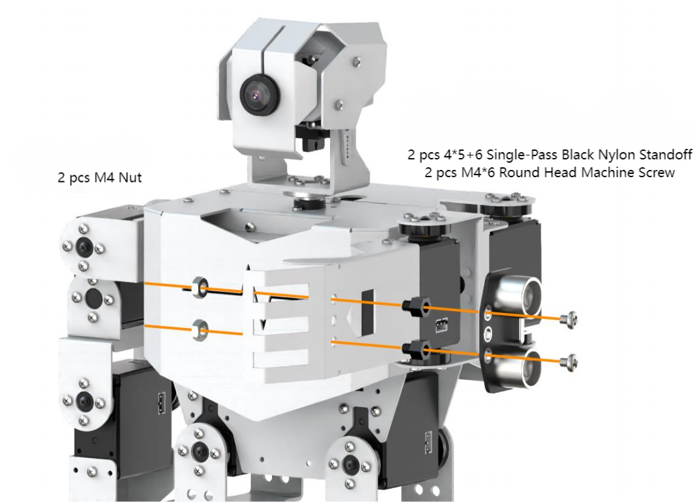
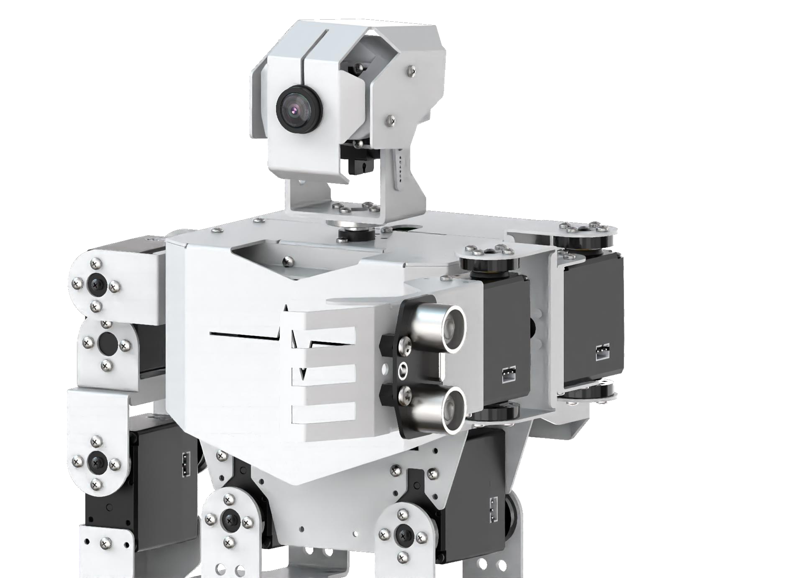
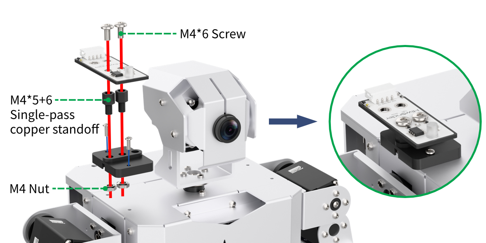
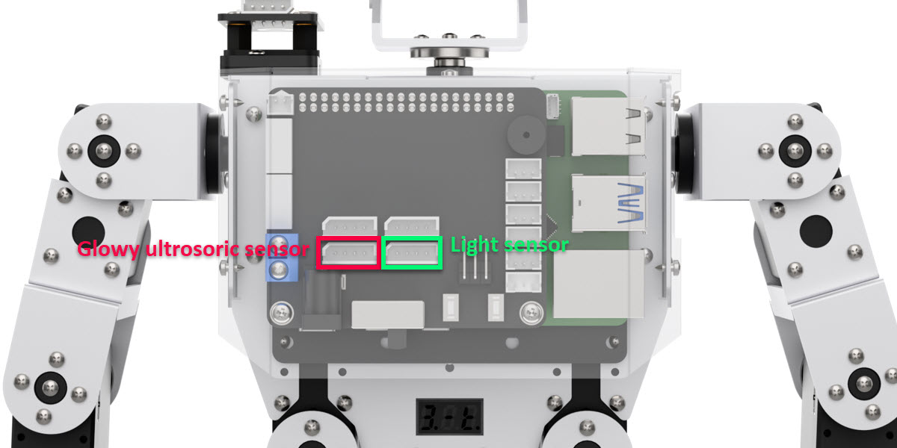
11.4.2 Intelligent Fill Light
Getting Ready
Prepare a light and an ultrasonic sensor, and then install the light sensor on the expansion hole of robot’s shoulder and install the ultrasonic sensor on the expansion hole of left arm. The installation method can refer to the file 11.4.1 Assembly under the same directory.
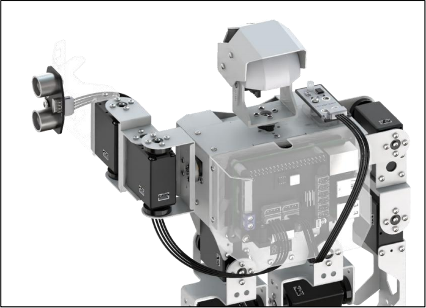
Working Principle
Let’s look at the working principle:
When the vision recognition is started and the external light detected by the light sensor is dark, the ultrasonic sensor emits the white light to fill light, otherwise, the ultrasonic sensor turns off the light.
Operation Steps
Note
The entered command must pay attention to case sensitivity and space.
(1) Turn on the robot and connect to the Raspberry Pi desktop through VNC.
(2) Click the icon on the upper left corner of the desktop to open command line terminal. Then enter the following command and press “Enter” to come to the directory of the game programmings.
cd /home/pi/TonyPi/Extend/sensor_course/sensor_development/
(3) Enter the following command, and then press “Enter” to start the game.
python3 photo_sensor_demo.py
(4) If want to exit the game, press “Ctrl+C” in the LX terminal. Please try multiple times if fail to exit.
Project Outcome
After the program is started, the robot raises its left hand and recognizes the label card within the visual range. When the ambient light gets dark, the buzzer will make a “Beep” sound. At the same time, the ultrasonic sensor will emit white light, which allows the robot to recognize the label card in dark environment.
Function Extension
(1) Adjusting the Fill Light
When the ambient light gets dark, the ultrasonic module will emit white light to fill light. You can modify the light color and brightness of the ultrasonic sensor, the specific operation is as follow:
① Enter the following command and press “Enter” to come to the directory of the game programs.
cd /home/pi/TonyPi/Extend/sensor_course/sensor_development/
② Enter the following command to come to the program editing interface.
vim photo_sensor_demo.py
③ Find the code in the program interface as the figure shown below.
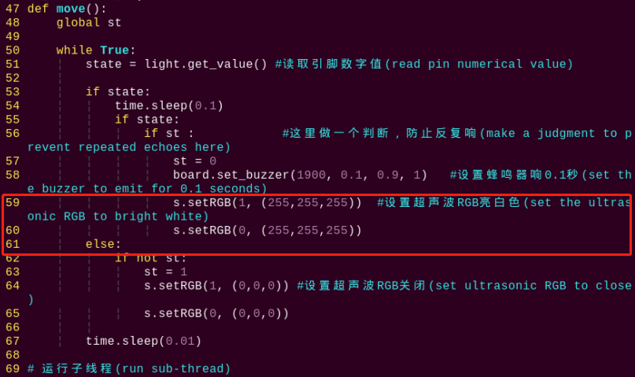
④ Press “i” on keyboard to enter the editing mode.

⑤ Modify “(255,255,255)” to “(255,0,0)” (the range of three parameter is 0-255), as the figure shown below:
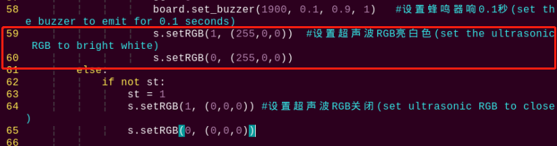
⑥ After modification, press “Esc” and then enter “:wq” (Please note that the colon is in front of wq). Then press “Enter” to save and exit the modified content.
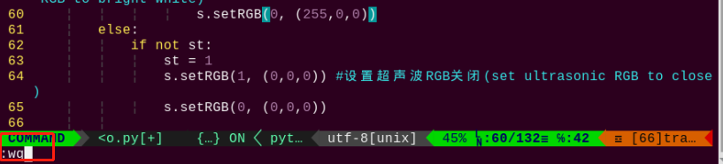
⑦ Enter the following command to restart the game, and observe the effect.
python3 photo_sensor_demo.py
(2) Adjusting the Beep Duration
When this mode is activated, if the ambient light is low, the buzzer will emit a “beep” sound as an alert. You can change the duration of this beep by modifying the program. Follow the steps below:
① Refer to steps (1) and (2) in section Adjusting the Fill Light to enter the program editing interface. Locate the code section highlighted in the image below.
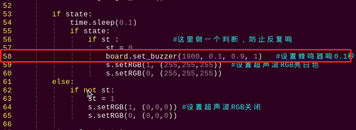
② Following step (4) in Adjusting the Fill Light, change the value “0.1” to “0.3”, as shown in the image.
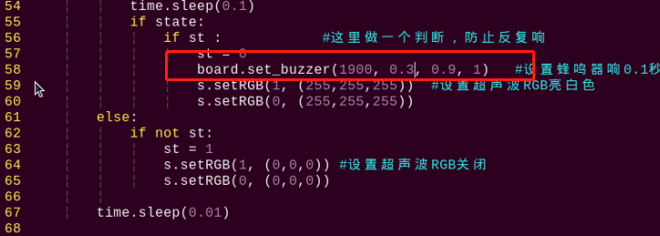
③ As in step (5) of section Adjusting the Fill Light, save and exit the file. Then, re-run the program by entering the following command to observe the updated effect:
python3 photo_sensor_demo.py
(3) Sensitivity Adjustment
If the performance of this activity is affected due to the sensitivity of the light sensor, you can adjust it by rotating the potentiometer on the sensor. Follow these steps:
① Locate the sensitivity adjustment potentiometer. Its position on the sensor is shown in the image below:
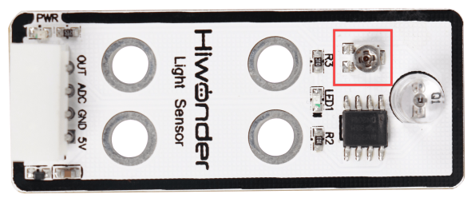
② Use a screwdriver to gently rotate the potentiometer while observing the status of LED1. The sensor reaches its optimal sensitivity when LED1 is at the threshold between turning on and off—this indicates the sensor is responding most accurately at the current threshold setting.
Program Analysis
The source code is saved in: /home/pi/TonyPi/Extend/sensor_course/sensor_development/photo_sensor_demo.py
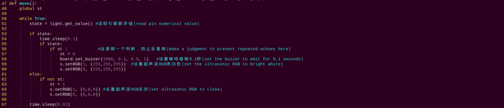
Module Parameter Import
| Imported Module | Function |
|---|---|
import sys |
Imports Python's built-in sys module to access system-specific parameters and functions. |
import cv2 |
Imports the OpenCV library for image processing and computer vision tasks. |
import time |
Imports the time module for handling time-related operations such as delays. |
import math |
Provides access to fundamental mathematical functions and constants. |
import threading |
Enables multithreaded execution within the program. |
import np |
Imports NumPy, a powerful library for numerical operations, especially arrays and matrices. |
from hiwonder.PID import PID |
Imports the PID control module for implementing proportional–integral–derivative control. |
from hiwonder import Misc as Misc |
Imports the Misc module, used for handling recognized rectangle data. |
from hiwonder import Board as Board |
Imports the Board module for controlling hardware like servos and buzzers. |
import hiwonder.camera as camera |
Imports the camera module to interface with video input devices. |
import hiwonder.ActionGroupControl as AGC |
Imports the action group module for executing pre-defined robot movements. |
import hiwonder.yaml_handle |
Provides tools for reading and handling YAML configuration files. |
Functional Overview
This module implements AprilTag detection and intelligent lighting compensation in low-light conditions.
Program Logic and Code Explanation
(1) Initialization
① Importing Required Libraries
In this step, all necessary libraries are imported to ensure proper functionality throughout the program. For details on the imported modules, please refer to section 6.1.
4 5 6 7 8 9 10 11 12 13 14 15 16 17 18 | import os import sys import cv2 import math import time import threading import numpy as np import gpiod import hiwonder.ros_robot_controller_sdk as rrc from hiwonder.Controller import Controller import hiwonder.Camera as Camera import hiwonder.Sonar as Sonar import hiwonder.apriltag as apriltag import hiwonder.ActionGroupControl as AGC import hiwonder.yaml_handle as yaml_handle |
② Setting Initial State
The robot’s initial state is configured, including default positions and parameters.
29 30 31 32 33 34 | board = rrc.Board() ctl = Controller(board) def initMove(): ctl.set_pwm_servo_pulse(1, 1500, 500) ctl.set_pwm_servo_pulse(2, servo_data['servo2'], 500) AGC.runActionGroup('lift_up') |
(2) AprilTag Detection
A function named apriltagDetect is defined to detect AprilTag markers within an image and return relevant tag information.
Using the AprilTag detector on a grayscale image, the function returns a list of detected tags. Each entry includes the tag family, tag ID, and the coordinates of the tag’s center point (objective_x, objective_y).
77 78 79 80 81 82 83 84 85 86 87 88 89 90 91 92 93 94 95 | def apriltagDetect(img): gray = cv2.cvtColor(img, cv2.COLOR_BGR2GRAY) detections = detector.detect(gray, return_image=False) if len(detections) != 0: for detection in detections: corners = np.int0(detection.corners) cv2.drawContours(img, [np.array(corners, int)], -1, (0, 255, 255), 2) tag_family = str(detection.tag_family, encoding='utf-8') tag_id = int(detection.tag_id) objective_x, objective_y = int(detection.center[0]), int(detection.center[1]) object_angle = int(math.degrees(math.atan2(corners[0][1] - corners[1][1], corners[0][0] - corners[1][0]))) return [tag_family, tag_id, objective_x, objective_y] return None, None, None, None |
(3) Intelligent Lighting Compensation
The move function continuously monitors the status of GPIO pin 24.
When a high signal is detected, the buzzer sounds and the RGB light turns white.
When a low signal is detected, the buzzer is turned off and the RGB light is disabled.
The variable st is used to prevent the buzzer from triggering repeatedly.
47 48 49 50 51 52 53 54 55 56 57 58 59 60 61 62 63 64 65 66 67 | def move(): global st while True: state = light.get_value() if state: time.sleep(0.1) if state: if st : st = 0 board.set_buzzer(1900, 0.1, 0.9, 1) s.setRGB(1, (255,255,255)) s.setRGB(0, (255,255,255)) else: if not st: st = 1 s.setRGB(1, (0,0,0)) s.setRGB(0, (0,0,0)) time.sleep(0.01) |
11.5 Mask Recognition
11.5.1 Assembly
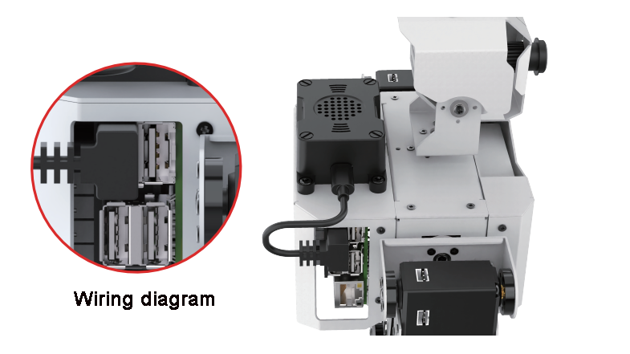
11.5.2 Mask Recognition
Getting Ready
Prepare MP3 module and install it on the expansion hole of robot’s shoulder. The specific installation method can refer to the file “11.5.1 Assembly” under the same directory.
Working Principle
Let’s look at the working principle:
Firstly, scale the screen to detect the human face. Then convert the recognized face coordinates into the coordinates before scaling, and then judge whether it is the biggest face, and frame the recognized face.
If the human face does not wear mask, AI voice interaction box will play “no mask, please wear mask”. If the human face is wearing a mask, AI voice interaction box will play “Mask is on, please this way”.
Operation Steps
Note
The entered command must pay attention to case sensitivity and space.
(1) Turn on the robot and connect to the Raspberry Pi desktop through VNC.
(2) Click the icon on the upper left corner of the desktop to open command line terminal. Enter the following command and press “Enter” to come to the directory of the game programmings.
cd /home/pi/TonyPi/Extend/sensor_course/sensor_development/
(3) Enter the command below, and then press “Enter” to start the game.
python3 mask_detect.py
(4) If want to exit the game, press “Ctrl+C” in the LX terminal. Please try multiple times if fail to exit.
Project Outcome
After the program is started, TonyPi Pro starts search for the face. If the face with no mask is recognized, AI voice interaction box will play “No mask, please wear mask”. If the face with a mask is recognized, AI voice interaction box will play “Wear mask, please pass”.
Program Analysis
The source code is saved in: /home/pi/TonyPi/Extend/sensor_course/sensor_example/mask_detect.py
(1) Importing Functional Modules
4 5 6 7 8 9 10 11 12 13 14 15 16 17 18 19 20 21 22 23 24 | import os import cv2 import sys import time import torch import argparse import numpy as np from speech import speech from pathlib import Path import hiwonder.ActionGroupControl as AGC import hiwonder.yaml_handle as yaml_handle import hiwonder.ros_robot_controller_sdk as rrc from hiwonder.Controller import Controller import torch.backends.cudnn as cudnn from utils.plots import Annotator, colors from models.experimental import attempt_load from utils.datasets import LoadImages, LoadStreams from utils.torch_utils import load_classifier, select_device, time_sync from utils.general import apply_classifier, check_img_size, check_imshow, \ check_requirements, check_suffix, colorstr, increment_path, non_max_suppression, \ print_args, save_one_box, scale_coords, set_logging, strip_optimizer, xyxy2xywh |
① torch: Used to load the YOLOv5 model and perform inference.
② cv2: Used for reading images, displaying inference results, and controlling image output.
③ speech: Used for playing audio files to notify users about mask-wearing status.
④ hiwonder: Used to control hardware components such as servos.
⑤ time: Provides time-related functions, including delays within the program.
(2) Inference Workflow
139 140 141 142 143 144 145 146 147 148 149 150 151 152 153 154 | for *xyxy, conf, cls in reversed(det): if view_img: c = int(cls) label = None if hide_labels else (names[c] if hide_conf else f'{names[c]} {conf:.2f}') print(label) if str(label[:-5]) == 'without_mask': if time.time()- times >= 5: speech.play_audio(os.path.join(code_path, 'audio', 'without_mask.wav')) times = time.time() elif str(label[:-5]) == 'withmask': if time.time()- times >= 5: speech.play_audio(os.path.join(code_path, 'audio', 'with_mask.wav')) times = time.time() annotator.box_label(xyxy, label, color=colors(c, True)) |
① YOLOv5 Inference:
The program uses PyTorch to load a pre-trained YOLOv5 model to detect whether a person is wearing a mask or not in the input image.
② Voice Prompt Based on Detection:
Based on the inference results, the program plays a corresponding voice prompt to remind the user to wear a mask or confirm that they are wearing one.
③ Playback Frequency Control:
To avoid repetitive alerts, the prompt is played once every 5 seconds when a “no mask” or “mask detected” condition is continuously observed.
11.6 Intelligent Temperature Control
11.6.1 Assembly
(1) Remove two M2*6 screws.
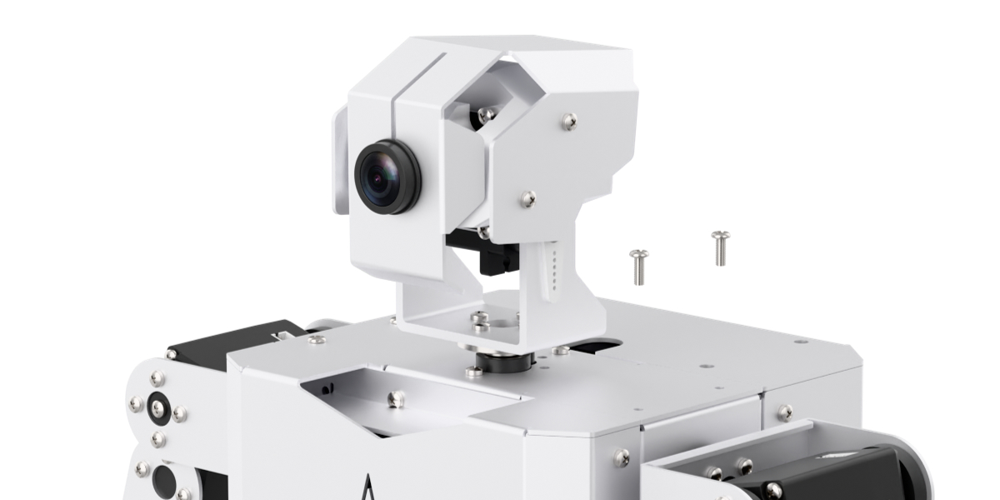
(2) Use two M2×6 screws to secure the black shoulder bracket to the robot’s shoulder. Then, use two M4×5+6 single-pass nylon standoffs and two M4×6 round-head screws to attach the temperature and humidity sensor to the shoulder bracket.
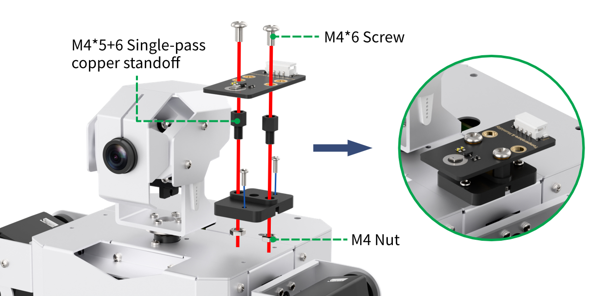
(3) Secure the fan module to the robot hand using 1 M4 * 6 screw, 1 M4 * 5+6 single-pass nylon standoff and 1 M4 screw.
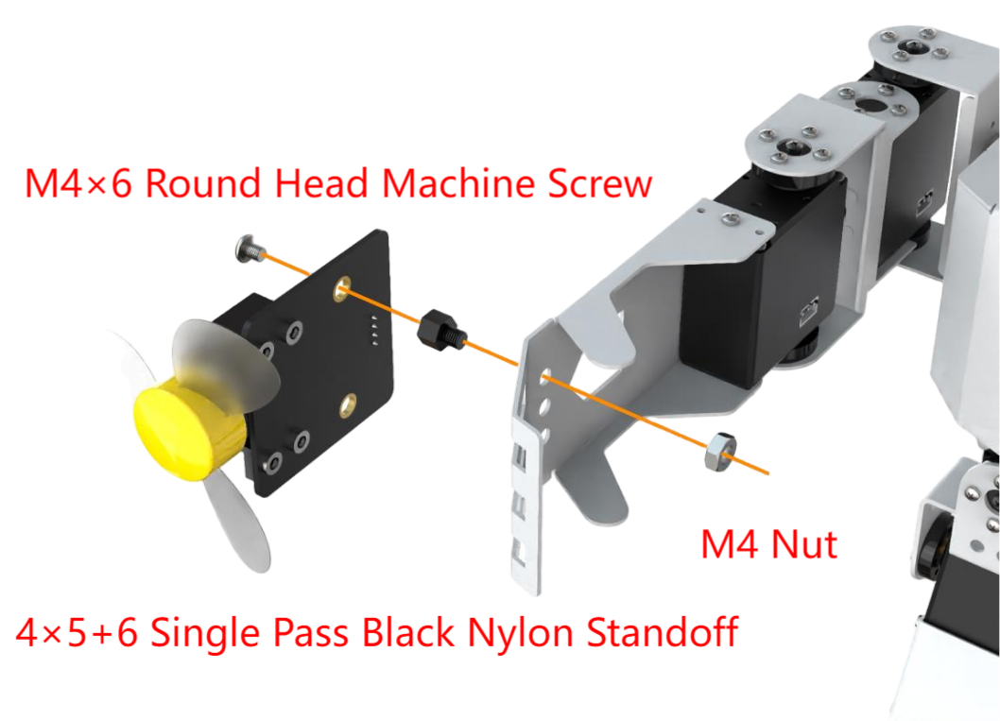
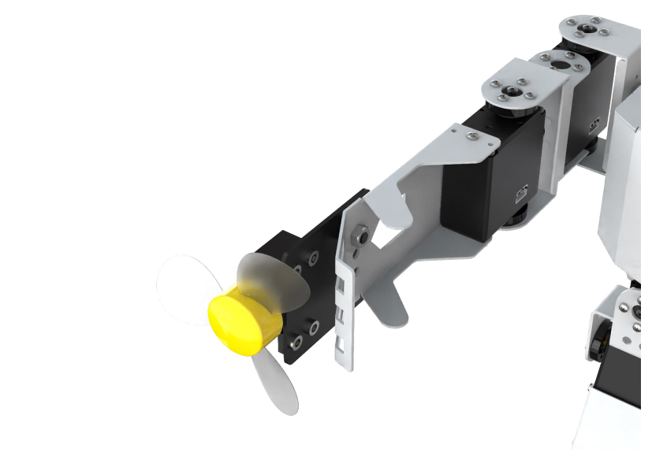
(4) Connect the sensor wires to the corresponding positions shown in the diagram below:
11.6.2 Intelligent Temperature Control
Preparation
Connect the temperature and humidity sensor to the I2C port on the TonyPi expansion board, Then, connect the fan module to the IO7 and IO8 ports on the TonyPi expansion board:
Module Introduction
(1) Temperature and Humidity Sensor
This sensor detects ambient temperature and humidity, providing accurate feedback of the measured data.
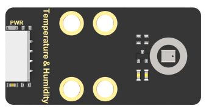
The temperature and humidity module (AHT10) converts the surrounding air’s temperature and humidity into digital signals, which are transmitted to the control board via I2C communication.
(2) Fan Module
The fan module operates without the need for an additional motor driver board. It uses PWM (Pulse Width Modulation) signals to control rotation. By sending PWM pulses in two directions, the fan’s rotation direction can be controlled. Additionally, adjusting the PWM duty cycle allows you to set the fan’s speed.
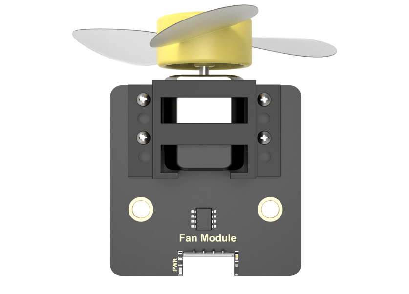
Operation Steps
Note
Commands must be entered with exact case sensitivity and spacing.
(1) Power on the TonyPi and connect to the Raspberry Pi desktop remotely via VNC.
(2) On the Raspberry Pi desktop, double-click the “Terminator” icon to open the command terminal.
(3) Enter the command to navigate to the game directory:
cd TonyPi/Extend/sensor_course/sensor_development
(4) Open a new terminal window and enter the command to start the game:
python3 temperature_control.py
(5) To stop the game, press Ctrl+C in the LX terminal. If it does not stop immediately, press Ctrl+C multiple times until it closes.
Program Outcome
Once the program starts, the temperature and humidity sensor will begin monitoring the surrounding environment and display the readings on the terminal. When the temperature exceeds 20°C, the fan module will automatically turn on; otherwise, it will turn off.
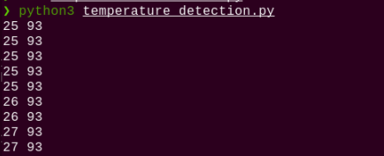
Program Analysis
The source code is saved in: /home/pi/TonyPi/Extend/sensor_course/sensor_example/temperature_detection.py
(1) Importing Modules
5 6 7 | import smbus import gpiod import time |
Use import statements to load the required modules:
① smbus: For communicating with I2C devices, enabling data read/write operations.
② gpiod: For controlling GPIO pins, used to operate hardware devices like the fan.
③ time: Provides time-related functions for delays in the program.
(2) Sensor Data Acquisition and Processing
① Sensor Class Definition
9 10 11 | class AHT10: CONFIG = [0x08, 0x00] MEASURE = [0x33, 0x00] |
Define the AHT10 class to retrieve data from the AHT10 sensor.
Class attributes:
CONFIG: Configuration parameter set to [0x08, 0x00]MEASURE: Measurement command parameter set to [0x33, 0x00]
② Initialization Method __init__
13 14 15 16 | def __init__(self, bus=1, addr=0x38): self.bus = smbus.SMBus(bus) self.addr = addr time.sleep(0.2) |
Initialize the
smbus.SMBusobject for I2C communication with the AHT10 sensor.Store the sensor’s I2C address.
Delay for 0.2 seconds to ensure sensor initialization.
③ Data Acquisition Method getData
18 19 20 21 22 23 24 25 26 27 28 29 30 | def getData(self): self.bus.write_i2c_block_data(self.addr, 0xAC, self.MEASURE) time.sleep(0.5) data = self.bus.read_i2c_block_data(self.addr, 0x00, 6) temp = ((data[3] & 0x0F) << 16) | (data[4] << 8) | data[5] ctemp = ((temp * 200) / 1048576) - 50 hum = ((data[1] << 16) | (data[2] << 8) | data[3]) >> 4 chum = int(hum * 100 / 1048576) return (ctemp, chum) |
Read one byte of data initially.
Send the measurement command to the sensor.
Delay for 0.5 seconds to allow the sensor to complete the measurement.
Read the returned data from the sensor.
Process the data to calculate temperature and humidity values.
Return the calculated temperature and humidity.
④ GPIO Pin Initialization
41 42 43 44 45 46 | chip = gpiod.Chip("gpiochip4") fanPin1 = chip.get_line(8) fanPin1.request(consumer="pin1", type=gpiod.LINE_REQ_DIR_OUT) fanPin2 = chip.get_line(7) fanPin2.request(consumer="pin2", type=gpiod.LINE_REQ_DIR_OUT) |
Initialize the GPIO chip
gpiochip4.Acquire pins 8 and 7 and set them as outputs to control the two fan pins.
⑤ Fan Control Function
49 50 51 52 53 54 55 | def set_fan(start): if start == 1: fanPin1.set_value(1) fanPin2.set_value(0) else: fanPin1.set_value(0) fanPin2.set_value(0) |
Define the function set_fan to control the fan’s on/off state.
If the input parameter start equals 1, turn on the fan by setting pin 8 to HIGH and pin 7 to LOW.
If start is not 1, turn off the fan by setting both pins 8 and 7 to LOW.
(3) Temperature Control Logic
59 60 61 62 63 64 65 66 67 68 69 70 71 72 73 74 75 | count = 0 while True: try: temp, hum = aht10.getData() t = int(temp) print(f"温度: {t}°C, 湿度: {hum}%") if t > 20: count += 1 if count > 5: set_fan(1) count = 0 else: count = 0 set_fan(0) except KeyboardInterrupt: set_fan(0) break |
① Initialize a counter count to 0.
② Enter an infinite loop to continuously read temperature data from the sensor.
③ If the temperature exceeds 20°C, increment the counter by 1. When the counter exceeds 5, turn on the fan and reset the counter to 0.
④ If the temperature is less than or equal to 20°C, reset the counter to 0 and turn off the fan.